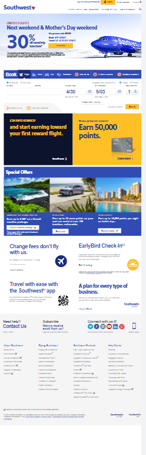

Alignment
wedevs
www.wedevs.com is a software development agency specializing in WordPress plugins and themes. Dokan is one of their flagship products. The alignment on this website is very simple, it has an establish sense of hierarchy, highlight key elements and create a seamless flow on the web interface. So visitors can easily explore the website and find the information they looking for.
Proximity
Southwest
The principle of proximity calls for related items to be grouped visually, creating less clutter and making for a more organized layout. Items unrelated to each other should be placed further apart, to emphasize their lack of relationship. There proper white space, visual hierarchy, and there is clarity and legibility.
Hick's Law
amazon
Generally, the application of Hick’s Law is simple – reduce the number of stimuli and get a faster decision-making process — but there are exceptions to the rule. Good designers try to employ Hick’s Law to respect their users’ time and to ensure a high-quality user experience. Amazon places the focus on the search box. Just 1 option to choose and make sure you find what you are looking for.